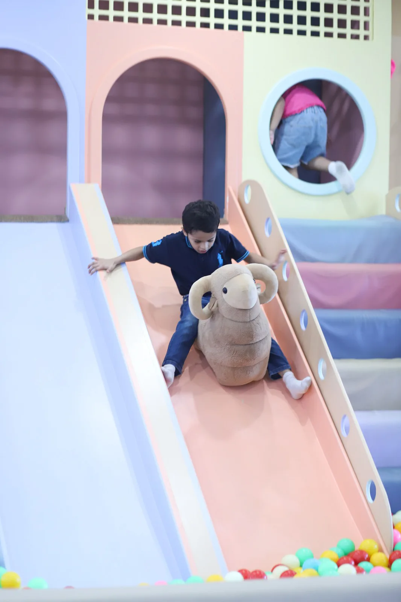
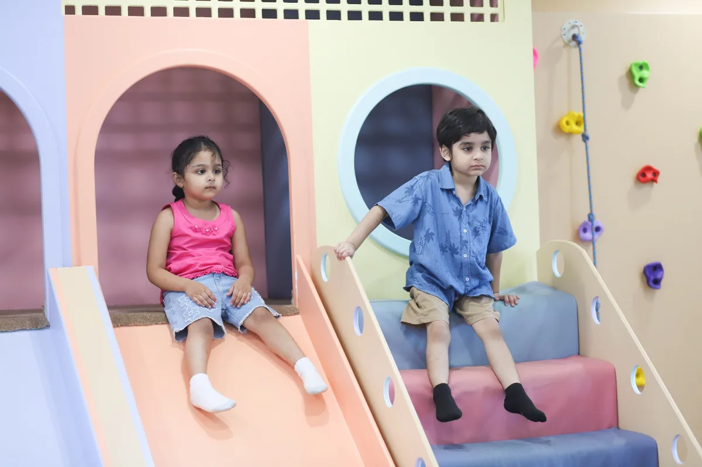

Kids Birthday Party Themes in Islamabad: 12 Ideas Children Love
A theme turns a normal party into the one your child talks about for months. Kids usually ask for a theme themselves, and cartoon and character themes are the most common request. Here are 12 theme ideas for a kids birthday in Islamabad, plus practical tips on décor, photography and booking.
Why a Theme Matters
A theme gives the whole party one clear look: the backdrop, the cake table, the balloons and the photos all match. It also makes planning simpler, because every choice (colours, décor, cake) follows from one idea. At Little Explorers World, kids still get all 8 play zones during the party, so the theme is the setting and the play zones keep everyone busy.
12 Birthday Theme Ideas for Kids
1. Superheroes
The easiest theme to get right. Bold colours, capes and masks suit active kids, and the play zones double as a training ground.
2. Princess
Crowns, pastel décor and a decorated cake table. A classic that works well for photos.
3. Peppa Pig
A favourite with toddlers and pre-schoolers. Bright pink and simple shapes keep it fun for the little ones.
4. Dinosaur
Greens, browns and roaring fun. Great for kids who already love animals and adventure.
5. Unicorn
Rainbow colours and sparkle, popular with girls of many ages.
6. Jungle Safari
Animal prints and leafy décor. A good fit for mixed groups of boys and girls.
7. Space
Rockets, planets and stars. Dark blues and silver look striking in photos.
8. Frozen
Icy blues and white, with snowflake details for a winter-season party.
9. Ocean
Sea creatures and blue-green décor. A calm, colourful option that photographs nicely.
10. Cocomelon / Cartoon Characters
Toddler favourites. Ask us which characters your child loves and we will plan around them.
11. Adventure / Explorer
Maps, compasses and a treasure-hunt feel. A natural match for a play centre full of climbing and exploring.
12. Colour Theme
No character at all: pick two or three colours and we build the whole setup around them. Simple, modern and easy to style.

Pick a theme for your party at Little Explorers World, Bahria Town Phase 4. Premium and Grand packages can be customised to any theme.
WhatsApp UsHow to Choose the Right Theme
- Ask your child first. Most kids already know what they want.
- Think about the guest list. Mixed groups of boys and girls suit jungle, space, adventure or a plain colour theme.
- Match the age. Toddlers do well with familiar characters. Older kids often prefer adventure, space or superheroes.
- Think about the photos. Strong colours and a clear backdrop look better in pictures.
Add Photography and Videography
A good theme deserves good photos. We offer two add-on options for birthday parties:
- Photography: Rs 15,000
- Photos + Video: Rs 25,000 (includes 1 edited video and the raw data)
You can see the full details on our birthday parties page.
How to Book a Themed Birthday
- WhatsApp us your preferred date, number of kids and theme.
- We confirm your slot and you pay a small advance.
- Our team sets up the décor before your guests arrive.
- You celebrate while we handle the rest.
Comparing venues first? Read our guide to the best kids birthday party places in Islamabad.
Frequently Asked Questions
Yes. Premium and Grand packages can be customised to a theme of your choice, such as superheroes, princesses, Peppa Pig, dinosaurs or space. Tell us the theme when you book on WhatsApp and we coordinate the décor.
As early as you can. Weekend dates at kids venues fill up fast, so send us your date and preferred theme on WhatsApp first, then finalise the details.
Yes. We offer a Photography package at Rs 15,000, and a Photos + Video package at Rs 25,000 that includes 1 edited video and the raw data.
Cartoon and character themes are the most common requests, such as superheroes, princesses and Peppa Pig. Adventure themes like dinosaurs, jungle safari and space are also popular with active kids.